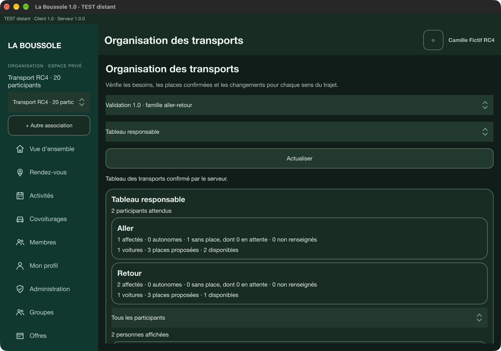

Savoir qui
fait partie du groupe.
Invitations, adhésions et responsabilités : chacun retrouve sa place dans l’espace de son association.
L’organisation des espacesLes membres, les événements et les trajets de votre association, réunis au même endroit. Pour passer moins de temps à organiser, et plus de temps ensemble.
La Boussole 1.0 · Démonstration privée · Paiements désactivés

Un projet né de la vie scoute, pensé pour les associations qui organisent des activités ensemble.
Invitations, adhésions et responsabilités : chacun retrouve sa place dans l’espace de son association.
L’organisation des espacesRéunir les participants autour d’une activité, partager le lieu et préparer les départs.
Explorer les fonctionsProposer un trajet et tester la réservation ou l’annulation d’une place dans la démonstration fictive.
Essayer le covoiturageLes fonctions évoluent encore. La démonstration illustre les parcours ; leur disponibilité et leur validation varient selon la plateforme.
Les parcours en validation privée précisent les besoins de chaque foyer, les places disponibles et les changements de dernière minute.
Identifier les personnes qui ont besoin d’une place pour chaque sens, celles déjà prises en charge et celles qui se déplacent par leurs propres moyens.
Déclarer plusieurs passagers, sélectionner les places à réserver et annuler uniquement la personne ou le sens concerné.
Rejoindre explicitement l’attente, suivre la confirmation d’une demande et retrouver les changements dans les avis internes de l’application.
Ces parcours sont présents dans la version 1.0 privée, avec une portée de validation précisée par plateforme. Ils ne sont pas tous présents dans la simulation web publique. Aucune date de sortie n’est annoncée.
macOS, Windows, iOS et Android sont visés. Les applications restent en démonstration privée, avec des vérifications différentes selon les appareils.
DMG 1.0 privé. Parcours familial vérifié.
Construction 1.0 bloquée par le quota gratuit.
Parcours familial croisé vérifié sur simulateur iOS. Installation publique fermée.
APK privé : annulation partielle vérifiée sur émulateur. Balayage à valider.
La refonte mobile 1.0 est développée avec une interface dédiée en Qt 6 et QML. Elle reprend les mêmes fonctions métier que les applications ordinateur. Découvrir les cinq parcours mobiles.
Aucun installateur public n’est proposé actuellement. Un parcours croisé iOS–Android est vérifié sur simulateur et émulateur ; les téléphones physiques et la distribution publique restent à valider.
Consulter la disponibilitéUn responsable ouvre l’espace de l’association, invite les membres, puis prépare la prochaine sortie. La démonstration permet de découvrir ce parcours sans compte.
Des invitations et des rôles adaptés aux responsabilités.
Les informations utiles, les participants et le rendez-vous.
Les conducteurs proposent leurs places, les membres réservent.
Des offres sont envisagées pour le lancement, avec une formule Découverte gratuite. Aucun paiement ou abonnement n’est activé.
Voir les offres en préparationDécouvrez le parcours avec des associations, des membres et des trajets entièrement fictifs. Aucune donnée personnelle à renseigner.